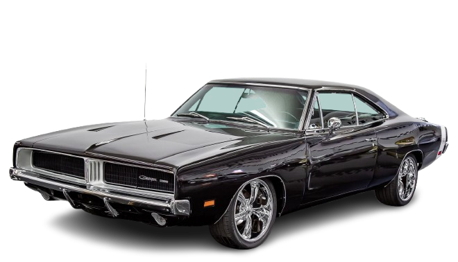
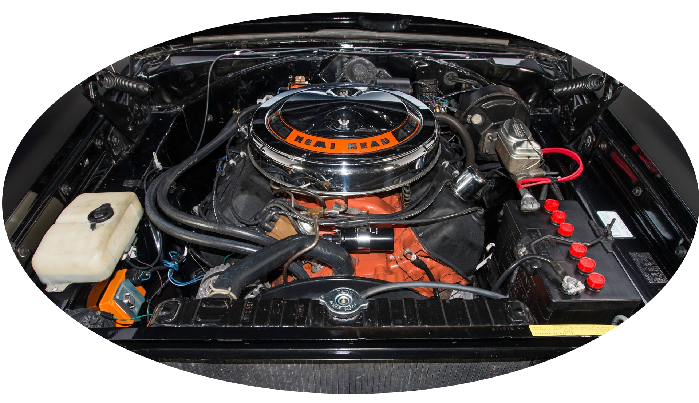
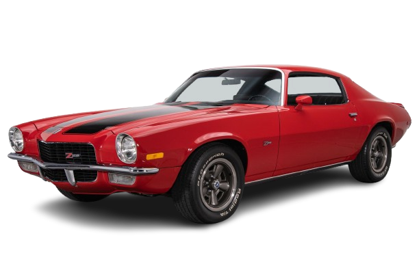
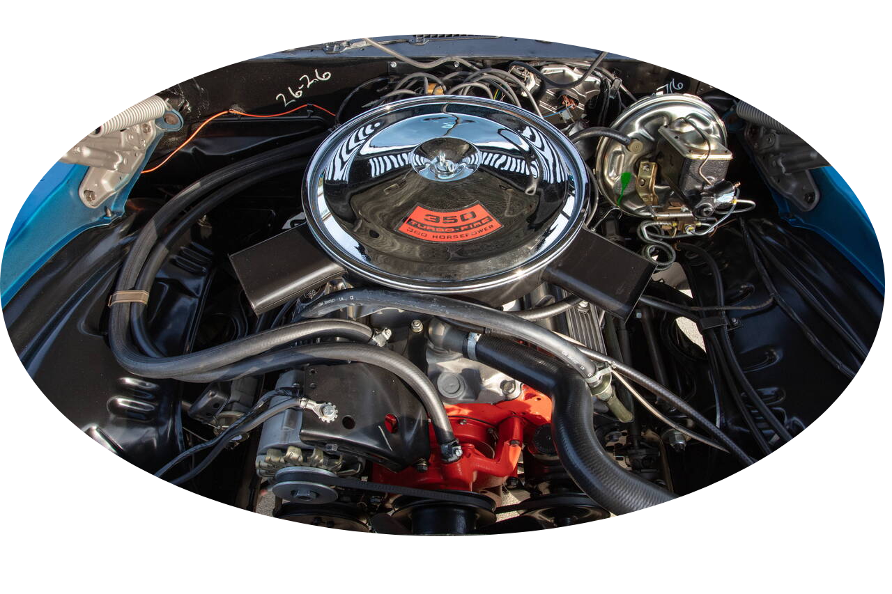

Az 1969-es Dodge Charger az amerikai izomautó-éra ikonja, amely a középen elválasztott hűtőmaszkjáról és a Hazárd megye lordjai sorozat „General Lee” autójaként vált világhírűvé. A modell versenypályára tervezett változata, a Charger Daytona volt az első autó, amely átlépte a 320 km/h-s sebességet a NASCAR-ban, így a típus ma a gyűjtők egyik legértékesebb kedvence.
A legerősebb változatokat a legendás, 7,0 literes 426 Hemi V8-as erőforrással szerelték fel, amely a félgömb alakú égéstereiről kapta a nevét. Hivatalosan 425 lóerős teljesítményével és brutális nyomatékával páratlan dinamikát nyújtott, ám ritkasága miatt a Hemi motoros darabok ma a legkeresettebb klasszikusok közé tartoznak.


Az 1970-es Chevrolet Camaro Z28 a második generációs póniautók egyik legismertebb alakja, amely európai sportkocsik ihlette, agresszív vonalvezetésével, mélyre húzott hűtőmaszkjával és a jellegzetes, osztott első lökhárítóval (Rally Sport csomag) vált halhatatlanná. A típust eredetileg az SCCA Trans-Am versenysorozat homologizációs szabályaihoz igazítva fejlesztették ki, kiemelkedő úttartásának és pontos kormányozhatóságának köszönhetően pedig a kanyargós versenypályák királyává, ma pedig a gyűjtők egyik legkeresettebb kedvencévé vált.
A motorháztető alatt a legendás, 5,7 literes (350 köbhüvelykes) LT-1 V8-as erőforrás dolgozott, amelyet a Corvette-ből emeltek át a magas fordulatszámra hangolt karakterisztikájával. Hivatalosan 360 lóerős teljesítményével és pörgős, mechanikus szelepvezérlésű blokkjával páratlan vezetési élményt nyújtott, így az eredeti, egyetlen évig gyártott nagy teljesítményű 1970-es Z28-as példányok ma az amerikai klasszikusok legértékesebb darabjai közé tartoznak.